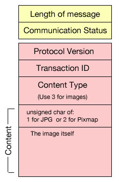

Images
The Android PhotoshopImages example shows how to get the current image data from Photoshop and display that information on the client. This version only displays the current active document in Photoshop. The example could be modified to display all the open images if needed. The source code to this project is in samples/android/photoshoimages. Import the PhotoshopImages example application into Eclipse for the details.
This example asks for the image as JPEG data. If desired, the example can also work for Pixmap data but it will be extremely slow. Currently this example only gets data from Photoshop. Refer to the transmitimage iOS example for both sending and receiving image data.
Asking for an image from Photoshop
To ask Photoshop to send an image to the client, use the following JavaScript code:
var idNS = stringIDToTypeID( "sendDocumentThumbnailToNetworkClient" );
var desc1 = new ActionDescriptor();
desc1.putInteger( stringIDToTypeID( "width" ), 600 );
desc1.putInteger( stringIDToTypeID( "height" ), 400 );
desc1.putInteger( stringIDToTypeID( "format" ), 1 );
executeAction( idNS, desc1, DialogModes.NO );
Notice that width and height is the maximum size that you want from Photoshop. If the current active open image is bigger than the requested size, Photoshop will downsize it before sending. If the image is smaller than the reqested size, it will send that image as is.
The second thing of which to take notice is the format. Use 1 for JPEG and 2 for Pixmap. When you send this JavaScript message to Photoshop, you will get a message back with the image in the content section of the message.
Note that Pixmap is images in raw form. They will come in as RGB with no transparency info. If you are doing this in iOS, note that iOS prefers Pixmap in RGBA8 format, which means RRRTGGGTBBBT format instead of RRRGGGBBB. It is much easier and safer to use JPEG than Pixmap. The downside to JPEG is that if Photoshop downsizes the image, it will not look crisp due to JPEG compression. Unless there is a special reason to use Pixmap, JPEG is recommended because it is easier to use and handle.
Sending an image to Photoshop
To send an image to Photoshop, there is no JavaScript to send. You take the JPEG and place that directly into the message. Embed an unsigned char of 1 for JPEG or 2 for Pixmap. In the content type section, use 3 to tell Photoshop that the content is an image.
